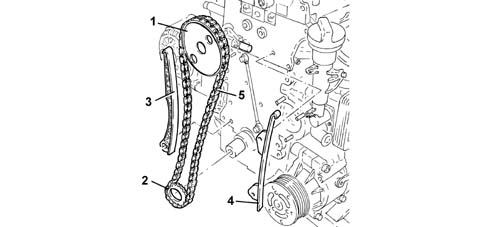

1032A chain timing system
- Path
- Descriptions > 10 ENGINE > 1032 TIMING SYSTEM > 1032A chain timing system
- Kind
- system description
- Applies to
- all engines; all production periods
- Interactive page
- https://sloeber94.github.io/elrnDB-fDbl/en/#/2582299
Applies to: all engines; all production periods
The timing gear is driven directly by chain.

1 - Driven sprocket 2 - Drive sprocket 3 - Moving block 4 - Fixed block 5 - Timing chain